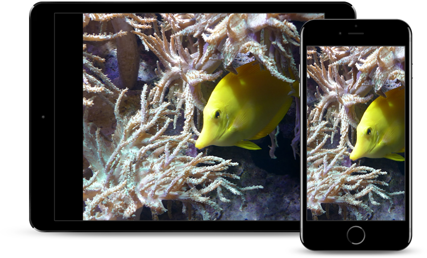
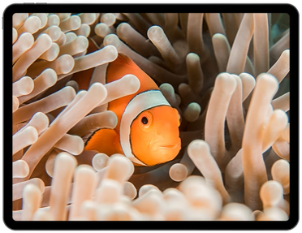

Most people give them fish food from the stores. You can give them algae wafers and flake foods. They can eat vegetables such as zucchini, peas, lettuce and spinach. Vegetables are full of the minerals and vitamins. They can also eat small amounts of fruit including apples and pears. But the best food for them is homemade fish food. It can save your time and money.
Find fish food nowFish Food is available around the world
Use your camera and smart phone to record your fish. They are very interesting and sometimes they mate with other fishes if you have more than one fish in your tank. You can share your video with your family, friends, and other people to show how cute they are.
Read More Fish need toys to play with. You can put plants in your fish tank so that they will feel like they are at home. You can add sand, gravel, colored glass marbles, pebbles on the bottom of your tank, but make sure you wash these things before putting on your tank. In addition, try putting a small fake house in the tank so that your fish to go there to rest like a human.